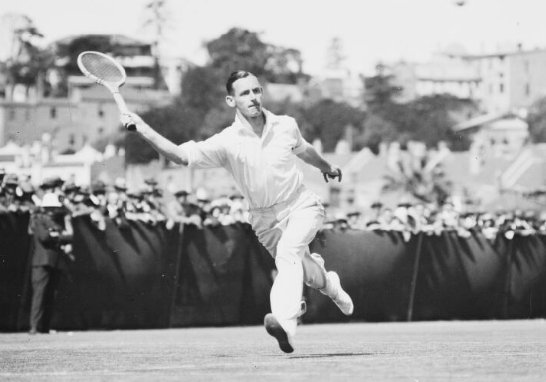

Training & Techniques

Basic Strokes
Tennis is built around six fundamental strokes: the serve, forehand groundstroke, backhand groundstroke, forehand volley, backhand volley and the overhead smash. Mastering these basics provides a strong foundation for everything you’ll do on court.
- Serve: Every point starts with a serve. Stand behind the baseline, toss the ball above your head and swing to send it into the diagonally opposite service box. Players get two chances to land a legal serve.
- Forehand & Backhand: Rotate your body and use your legs, hips, shoulders and arms as a kinetic chain to generate power and control. Keep a relaxed grip, watch the ball and follow through.
- Volleys: Move forward and take the ball early. Both forehand and backhand volleys use shorter swings for control and placement.
- Overhead: When your opponent hits a lob, turn sideways, point at the ball with your non‑hitting hand and swing overhead like a serve. A full follow‑through helps you direct the ball deep into your opponent’s court.
Footwork Basics
Effective footwork positions you for every shot. Perform a split step before your opponent hits the ball to stay balanced and ready to move. Use small adjustment steps to line up groundstrokes and shuffling steps to cover the baseline. For wide balls, incorporate crossover steps and recover quickly to the centre of the court.
Conditioning & Fitness
Tennis demands endurance, speed and agility. Complement your hitting sessions with cardiovascular exercises like running or cycling, strength training such as squats, lunges and planks, and agility drills like ladder runs and cone sprints. Stretching before and after play improves flexibility and reduces injury risk.
Strategy Tips
Early on, prioritise consistency over power. Aim your shots toward higher‑percentage targets—like deep in the middle of the court—to reduce errors. Cross‑court rallies give you more room and a lower net height. Mix up spin and depth to keep opponents off balance, and remember to recover to a neutral position after each shot.
Practice Plan Template
A balanced practice routine might include three sessions per week. Spend one day refining stroke technique, one day working on serves and volleys, and another day playing practice points or matches. Warm up with light jogging and dynamic stretches, then cool down with gentle stretching. As your skills improve, adjust your plan to focus on specific areas that need attention.